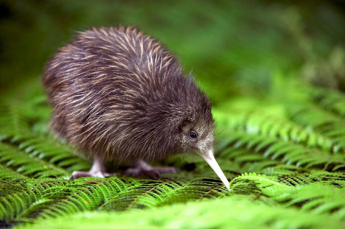
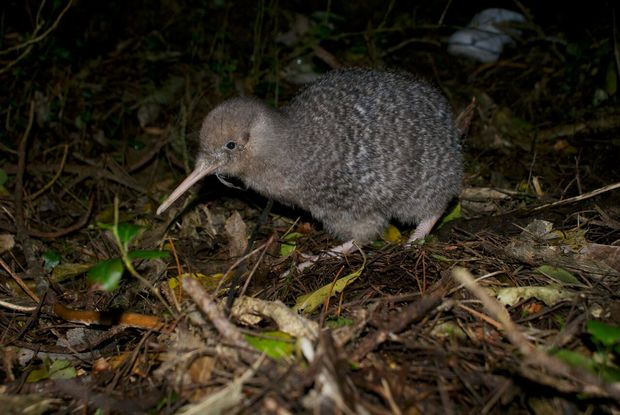

Los kiwis (Apteryx, del gr. «sin alas») constituyen un pequeño género de aves paleognatas, el único de su familia (Apterygidae) que a su vez es el único de su orden (Apterygiformes). Este género está compuesto por cinco especies endémicas de Nueva Zelanda.1 2 Son aves no voladoras pequeñas, aproximadamente del tamaño de una gallina. Antes de la llegada del hombre alrededor del año 1300, en Nueva Zelanda los únicos mamíferos que había eran murciélagos, y los nichos ecológicos que en otras partes del mundo eran ocupados por animales tan diversos como caballos, lobos y ratones fueron utilizados en Nueva Zelanda por aves (y en menor proporción por ciertas especies de reptiles). El término kiwi es maorí, idioma del pueblo homónimo de linaje malayopolinesio que fueron los primeros en colonizar Nueva Zelanda.
Su adaptación a la vida terrestre es extensiva: como todas las ratites, no tienen quilla en el esternón para anclar los músculos de las alas, y casi ni alas siquiera: los vestigios son tan pequeños que son invisibles bajo su plumaje que carece de rémiges y timoneras. Este plumaje es típico del ave en cuestión. Se diría que, por razones evolutivas y de adaptación al ecosistema, los plumones no han llegado a la etapa de verdaderas plumas, adoptando el característico aspecto de suaves cerdas que tiene el plumaje del kiwi. Mientras que generalmente los pájaros tienen huesos ahuecados para ahorrar peso y hacer el vuelo más práctico, el kiwi tiene médula, al igual que los mamíferos.
Los kiwis son criaturas tímidas y nocturnas con un sentido del olfato muy desarrollado merced a la existencia de verdaderos bigotes en torno al pico, tales bigotes son eficaces órganos olfativos. Otro rasgo generalmente inusual en un ave es la presencia de fosas nasales en la punta de su largo y filoso pico. Son omnívoros; para alimentarse incrustan el pico en el suelo en busca de lombrices, insectos y otros invertebrados. También comen fruta y, si la oportunidad se presenta, pequeños cangrejos de río, anfibios y anguilas.
Los machos se encargan de empollar los huevos (huevos que son los más grandes en relación a las proporciones del animal adulto), efectuándose la puesta durante diez semanas en nidos subterráneos semejantes a madrigueras, sin embargo ninguno de los progenitores se dedica a alimentar a las crías las cuales son nidífugas (apenas tienen lo suficientemente desarrollado el cuerpo salen del nido para alimentarse por cuenta propia).
Mientras que la visión tradicional de las relaciones filogenéticas de los kiwis con respecto a los otros paleognatos los establecía más cercanos a las moas, todos los estudios moleculares recientes los ubican como el grupo hermano de un clado formado por los casuarios y los emúes.3 4 A su vez, un estudio molecular de 2014 relaciona a estas aves como el grupo hermano de las aves elefante y ambos forman un clado hermano de casuarios y emúes.